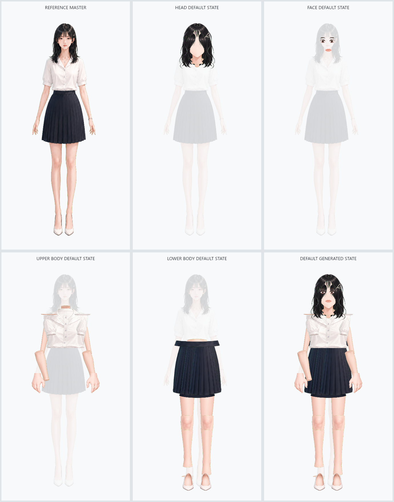
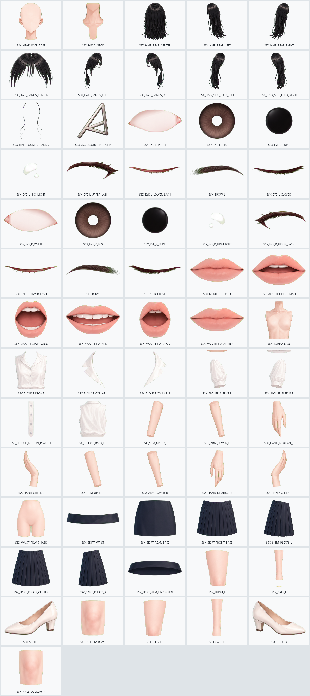
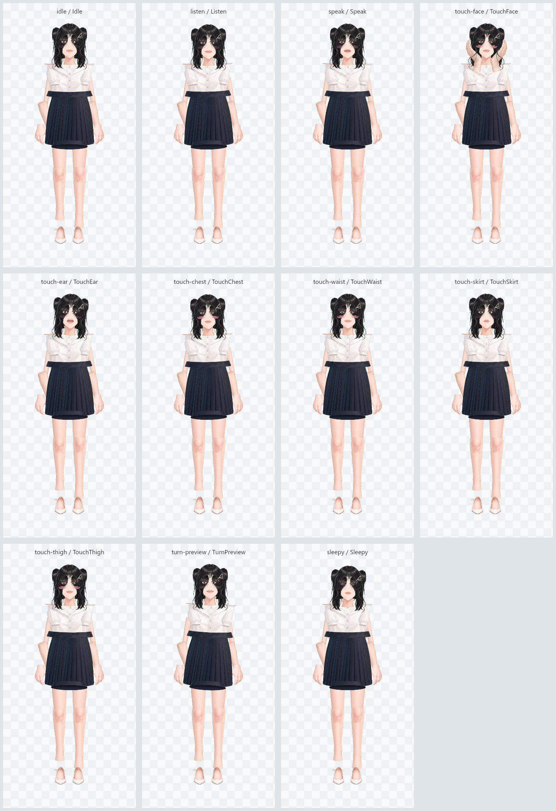
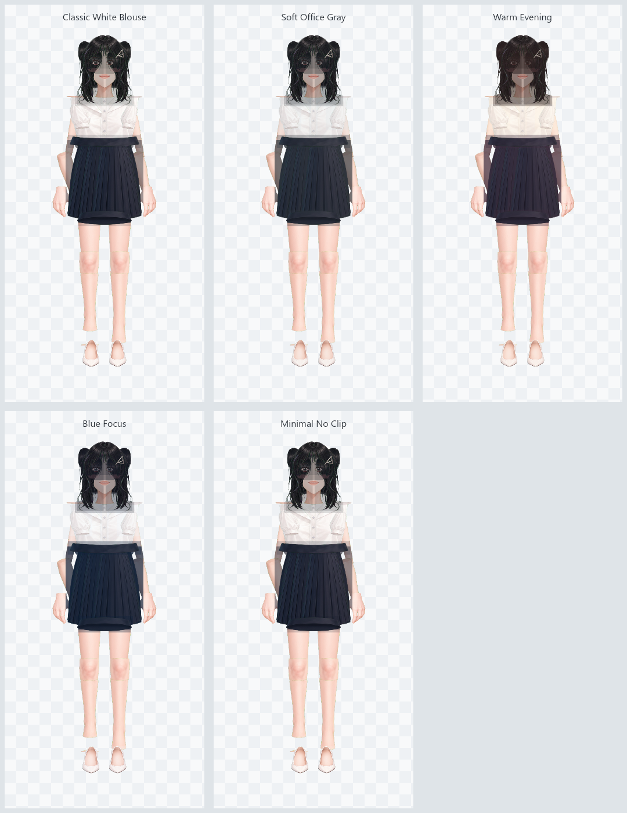

Source alignment
Default-state source placement and target review.

Static local review board for source art, Lite runtime motion, wardrobe preview, GitHub reference scan, and delivery Go/No-Go state.
| Stage | Status | Checks |
|---|---|---|
requirements | GO | concept-baseline-approved: pass athena-default-variant: pass |
source-and-layering | NO_GO | transparent-master: pass layered-baseline: pass parts-count: pass orientation-contract-ready: pass orientation-readiness-audit-ready: pass orientation-contract-go: pass turn-preview-qa: pass human-layer-review-approved: fail (manual review remains required) hidden-fill-review-approved: fail (manual hidden-fill review remains required) alignment-review-approved: fail (alignment review remains required) multi-view-source-ready: fail (profile/back source packages and orientation hit maps are not ready) |
lite-runtime | GO | lite-runtime-ready: pass runtime-ready: pass layers: pass hot-zones: pass motions: pass visual-qa-ready: pass motion-frames-visible: pass motion-deltas-visible: pass |
appearance-and-wardrobe | PARTIAL | appearance-preview-ready: pass appearance-qa-ready: pass appearance-preset-count: pass wardrobe-contract-ready: pass wardrobe-binding-plan-ready: pass wardrobe-readiness-audit-ready: pass runtime-outfit-preference-ready: pass wardrobe-contract-go: pass wardrobe-binding-plan-go: pass preview-only: pass (current appearance presets are preview-only) true-outfit-swap: fail (true outfit source layers and Cubism bindings are not ready) |
interaction | GO | interaction-policy: pass interaction-matrix-ready: pass interaction-readiness-audit-ready: pass runtime-policy-proof-ready: pass runtime-policy-proof-go: pass compiled-helper-policy-coverage: pass runtime-normal-mode-boundary-proof: pass runtime-private-asset-boundary-proof: pass interaction-audit-go: pass interaction-zones-covered: pass interaction-private-zone-count: pass interaction-visual-qa-representatives: pass normal-boundary: pass private-opt-in-boundary: pass persona-reply-delegation: pass private-mode-opt-in: pass semantic-hot-zones: pass private-zone-boundaries: pass |
cubism-handoff | GO | editor-installed: pass handoff-ready: pass readiness-checklist: pass export-gate: pass motion-template-count: pass physics-template: pass headless-export-unavailable: pass (manual Editor export remains required) |
genuine-cubism-export | NO_GO | export-audit-ready: pass runtime-proof-template-ready: pass runtime-proof-not-template: fail (runtime proof is still a template) cubism-export-ready: fail (no genuine .moc3 export yet) cubism-project-ready: fail (no Cubism project committed/exported yet) export-audit-go: fail (export audit status=no_go) |
distribution | NO_GO | public-installer-allowed: fail (public installer is intentionally blocked) store-package-allowed: fail (Store package is intentionally blocked) source-release-excluded: pass rights-review: fail (rights review remains required) live2d-license-review: fail (Live2D license review remains required) |
Default-state source placement and target review.

Full-body readability at chat, overlay, pet, and compact sizes.

Named transparent source parts and layer-slice coverage.

Lite preview motion frames and touch reactions.

Preview-only hair, eye, outfit tint, and hair-clip variants.

These repositories inform structure, runtime behavior, and future input routes. They are not imported character assets.
| Repository | License | Stars | Use | Boundary |
|---|---|---|---|---|
| Live2D/CubismWebSamples | NOASSERTION | 387 | Official package shape, motion group layout, Cubism Web runtime expectations. | Use as structural reference only; do not copy sample character assets into Su Shixia. |
| Live2D/CubismNativeSamples | NOASSERTION | 237 | Cross-runtime confirmation for model, motion, physics, texture, and export package layout. | Native runtime is not Athena desktop renderer; keep implementation in the existing Web/Electron path. |
| guansss/pixi-live2d-display | MIT | 1495 | Pixi display, hit-test, expression, and motion playback patterns for desktop interaction. | Useful runtime reference; still requires Live2D Cubism Core licensing review before distribution. |
| DenchiSoft/VTubeStudio | MIT | 1274 | Triggering, tracking, and parameter-control workflow ideas for model-driven reactions. | Workflow reference only; no VTube Studio app assets or API assumptions in the core package. |
| shinshin86/live2d-add-motion-sample-web-ui | MIT | 121 | Engineering reference for adding motion JSON definitions to an existing model package. | Borrow the workflow concept; authored Su Shixia motion data remains local to Athena. |
| emilianavt/OpenSeeFace | BSD-2-Clause | 2034 | Optional future face and landmark tracking input source for gaze, blink, and expression parameters. | Not needed for the current Lite preview; do not add as a dependency until a camera feature is explicitly scoped. |
| Inochi2D/inochi2d | BSD-2-Clause | 1771 | Useful contrast for open 2D rigging concepts and parameterized puppet design. | Not a Cubism replacement for Athena V2; genuine Cubism export remains the target. |
| Family | Label | Motion Groups | GitHub Evidence | Boundary |
|---|---|---|---|---|
idle-presence | Idle, listen, think, return | Idle Listen Think Greet Return Sleepy | Live2D/CubismWebSamples:Samples/Resources/Haru/motions Live2D/CubismNativeSamples:Samples/Resources | Timing and grouping reference only; Su Shixia needs authored curves and her own layered art. |
voice-speech | TTS speech and voice response | Speak Nod ShakeHead | Live2D/CubismWebSamples:Samples/Resources/Haru/Haru.model3.json Live2D/CubismWebSamples:Samples/Resources/Haru/sounds | Athena TTS drives mouth parameters locally; do not import sample voice clips. |
face-head-touch | Head, hair, face, ear, neck reactions | TouchHead TouchHair TouchHairClip TouchFace TouchEar TouchNeck | Live2D/CubismWebSamples:Samples/Resources/Haru/motions DenchiSoft/VTubeStudio:Wiki/API trigger workflow | No third-party character motion is copied; sensitive-zone responses stay mode-gated. |
hands-arms-gesture | Hands, arms, wave, drag | Wave TouchHand TouchUpperArm TouchForearm TouchWrist TouchPalm Drag | Live2D/CubismWebSamples:Samples/Resources/Hiyori/motions Live2D/CubismWebSamples:Samples/Resources/Mao/motions guansss/pixi-live2d-display:interaction runtime | Independent arm motion still requires real mesh deformers; Lite overlay hands are preview-only. |
garment-body-boundary | Clothing, torso, skirt, legs | TouchShoulder TouchCollar TouchBlouse TouchClothing TouchChest TouchRibs TouchAbdomen TouchWaist TouchHip TouchSkirt TouchLeg TouchThigh TouchKnee TouchCalf TouchAnkle TouchFoot TouchShoe | Live2D/CubismWebSamples:Samples/Resources/Haru/motions Live2D/CubismWebSamples:Samples/Resources/Haru/Haru.physics3.json | Private opt-in zones remain semantic and runtime-gated; public package must not include explicit assets. |
turn-orientation | Turn preview and future multi-view | TurnPreview | Live2D/CubismWebSamples:Samples/Resources/*/motions Inochi2D/inochi2d:parameterized puppet contrast | Current `TurnPreview` is a 2.5D hint; true turn requires separate source packages and orientation hit maps. |
future-tracking | Future gaze, blink, expression input | Idle Listen Speak | DenchiSoft/VTubeStudio:API/Wiki emilianavt/OpenSeeFace:landmark tracking | Not a current dependency and not required for the Lite preview. |
Current runtime presets remain tint/accessory previews. True wardrobe requires separate source layers, Cubism drawables, and motion QA.
| Outfit | Label | Source Status | Cubism Parameter | Missing For Production |
|---|---|---|---|---|
classic_daily | Signature Daily | current_source_exists_review_required | ParamOutfitClassic | human-polished hidden fill arm-pose garment variants true Cubism opacity binding skirt pleat physics after mesh authoring |
soft_assistant | Soft Assistant | future_source_required | ParamOutfitAssistant | cardigan source layers draped blouse source layers flowing skirt source layers cloth physics and clipping |
home_companion | Home Companion | future_source_required | ParamOutfitHome | knit top source layers relaxed lower garment source layers sitting/rest pose compatibility review sleepy and idle cloth-follow QA |
ivory_ceremony | Ivory Ceremony | future_source_required | ParamOutfitCeremony | gown bodice source layers draped skirt and train source layers high-ponytail hair variant source long-cloth physics and draw-order QA |
Wardrobe audit: no_go; true outfit swap: false; future source outfits missing: 3.
The persona may generate replies, but the runtime owns zone permissions, motion allowlists, and mode boundaries.
| Audit | go |
|---|---|
| Zones | 37 total, 6 private opt-in capable |
| Target layers | body=31 accessory=1 garment=5 |
| Sensitivity | affectionate=8 sensitive=11 neutral=14 private=4 |
| Known No-Go | semanticTouchMatrix=go runtimePromptBoundary=go immediateLiteVisualResponse=go gestureClassifierV2=no_go orientationSpecificHitMaps=no_go privateAssetPackage=no_go |
| Status | go |
|---|---|
| Runtime module | dist/renderer/avatar/live2d/AthenaLive2DCompanion |
| Coverage | zones=37 normal=37 private=6 fallback=31 |
| Boundary | replyTextGeneratedByPersona=true runtimeOwnsModeAndPromptBoundary=true normalModeAdultEscalationAllowed=false publicPackagePrivateAssetsAllowed=false proofDoesNotVerifyCubismMoc3=true |
| Zone | Layer | Sensitivity | Motion | Expression | Body Part |
|---|---|---|---|---|---|
hair | body | affectionate | TouchHair | playful | 头发 |
hair_clip | accessory | affectionate | TouchHairClip | shy | 银色 A 字发夹 |
forehead | body | affectionate | TouchHead | soft_smile | 额头 |
left_ear | body | sensitive | TouchEar | surprised | 耳侧 |
right_ear | body | sensitive | TouchEar | surprised | 耳侧 |
face_cheek | body | affectionate | TouchFace | shy | 脸颊 |
mouth_chin | body | sensitive | TouchFace | surprised | 嘴唇或下巴附近 |
neck | body | sensitive | TouchNeck | shy | 脖颈 |
collar | garment | sensitive | TouchCollar | shy | 衣领 |
left_shoulder | body | neutral | TouchShoulder | soft_smile | 肩膀 |
right_shoulder | body | neutral | TouchShoulder | soft_smile | 肩膀 |
left_upper_arm | body | neutral | TouchUpperArm | soft_smile | 上臂 |
right_upper_arm | body | neutral | TouchUpperArm | soft_smile | 上臂 |
left_forearm | body | neutral | TouchForearm | happy | 前臂 |
right_forearm | body | neutral | TouchForearm | happy | 前臂 |
left_wrist | body | affectionate | TouchWrist | happy | 手腕 |
right_wrist | body | affectionate | TouchWrist | happy | 手腕 |
left_hand | body | affectionate | TouchPalm | happy | 手 |
right_hand | body | affectionate | TouchPalm | happy | 手 |
blouse | garment | sensitive | TouchBlouse | confused | 白衬衫 |
chest | body | private | TouchChest | shy | 胸口 |
left_ribs | body | sensitive | TouchRibs | shy | 侧腰上方 |
right_ribs | body | sensitive | TouchRibs | shy | 侧腰上方 |
abdomen | body | sensitive | TouchAbdomen | shy | 腹部 |
waist | body | sensitive | TouchWaist | shy | 腰部 |
hip | body | private | TouchHip | shy | 臀侧或裙腰后侧 |
skirt_front | garment | sensitive | TouchSkirt | confused | 深色百褶裙 |
left_thigh | body | private | TouchThigh | shy | 大腿 |
right_thigh | body | private | TouchThigh | shy | 大腿 |
left_knee | body | neutral | TouchKnee | soft_smile | 膝盖 |
right_knee | body | neutral | TouchKnee | soft_smile | 膝盖 |
left_calf | body | neutral | TouchCalf | soft_smile | 小腿 |
right_calf | body | neutral | TouchCalf | soft_smile | 小腿 |
left_ankle | body | neutral | TouchAnkle | confused | 脚踝 |
right_ankle | body | neutral | TouchAnkle | confused | 脚踝 |
left_shoe | garment | neutral | TouchShoe | confused | 鞋 |
right_shoe | garment | neutral | TouchShoe | confused | 鞋 |
TurnPreview is a front-view 2.5D hint. True turn behavior requires source packages and hit maps per orientation.
| Audit | no_go |
|---|---|
| Current runtime | front_view_2_5d_hint_only; visual QA true |
| Sources | 1 ready, 7 future required |
| Known No-Go | orientationContract=go frontOrientationLitePreview=go turnPreview2_5dHint=go profileSourcePackages=no_go backSourcePackage=no_go orientationSpecificHitMaps=no_go fullTurnProduction=no_go |
| Orientation | Source Status | Runtime Status | Required Zone Families |
|---|---|---|---|
front | current_front_source_review_required | lite_front_runtime_preview | hair face ear neck torso arms hands garment lower-body shoes |
front_three_quarter_left | future_source_required | not_available | hair face ear neck torso arms hands garment lower-body shoes |
profile_left | future_source_required | not_available | hair-side ear-visible face-profile neck-side torso-side arm-side waist-side leg-side shoe-side |
rear_three_quarter_left | future_source_required | not_available | hair face ear neck torso arms hands garment lower-body shoes |
back | future_source_required | not_available | hair-rear neck-back shoulder-back back-upper back-lower waist-back skirt-back calf shoe |
rear_three_quarter_right | future_source_required | not_available | hair face ear neck torso arms hands garment lower-body shoes |
profile_right | future_source_required | not_available | hair-side ear-visible face-profile neck-side torso-side arm-side waist-side leg-side shoe-side |
front_three_quarter_right | future_source_required | not_available | hair face ear neck torso arms hands garment lower-body shoes |
| Area | Severity | Status | Note |
|---|---|---|---|
mouth | medium | provisional | Style is softer than v1 but still requires final illustrator and Cubism deformation review. |
hands | medium | provisional | Neutral and cheek-touch variants exist; anatomy, wrist joins, and hidden fill require rigger review. |
hidden-fill | high | required | Automated torso, blouse, skirt, and limb fills are not a substitute for hand-painted occluded regions. |
alignment | high | required | Target rectangles are production estimates and need user-visible approval before Cubism import. |
display-scale | medium | runtime-rule | A 220 px full-body render cannot carry readable facial emotion; compact placement must use a bust crop or a larger minimum height. |
multi-view | high | not-started | Profile and back source packages remain separate future work. |
hand-arm-layering | high | needs-human-polish | Current front source shows visible arm and hand cut-layer limitations in several poses. Runtime can animate the state, but final public art still needs manual hidden-fill and anatomy cleanup. |
lower-body-layering | medium | needs-human-polish | Shoes, calves, and skirt occlusion are structurally present but still read as provisional automated slices at full-body review scale. |
full-turn | high | not-production-ready | TurnPreview is a front-view 2.5D hint. True side/back turn behavior requires separate reviewed source views or a genuine Cubism rig with authored deformers. |
true-wardrobe-swap | high | not-production-ready | Appearance presets are tint and accessory-visibility previews over the same white-blouse and pleated-skirt silhouette. New clothing silhouettes require new reviewed source layers and Cubism binding. |
source-and-layering:human-layer-review-approvedsource-and-layering:hidden-fill-review-approvedsource-and-layering:alignment-review-approvedsource-and-layering:multi-view-source-readyappearance-and-wardrobe:true-outfit-swapgenuine-cubism-export:runtime-proof-not-templategenuine-cubism-export:cubism-export-readygenuine-cubism-export:cubism-project-readygenuine-cubism-export:export-audit-godistribution:public-installer-alloweddistribution:store-package-alloweddistribution:rights-reviewdistribution:live2d-license-review| Evidence |
|---|
| Human art review approval for source alignment, hands, lower body, hidden fill, and turn behavior. |
| Profile/back source packages plus orientation-specific hit maps for true turn behavior. |
| Separate source layers/drawables for true clothing variants beyond preview tint presets. |
| Wardrobe contract blockers resolved: default outfit human approval and three future public outfit source packages. |
| Cubism Editor project and exported moc3/model3/physics/cdi/texture files. |
| Cubism Web runtime proof replacing the template_unverified proof JSON. |
| Rights review and Live2D license review before public distribution. |
| Current renderer proof | unverified / template_unverified |
|---|---|
| Export audit | no_go |
| Public package | blocked |
| Store package | blocked |